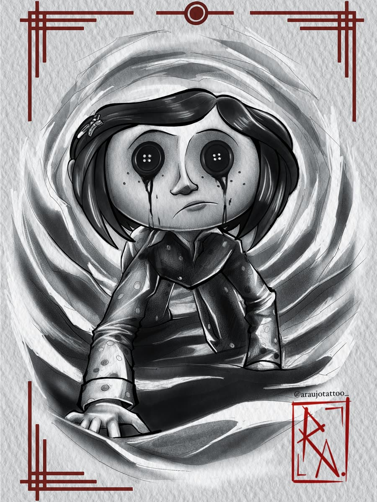
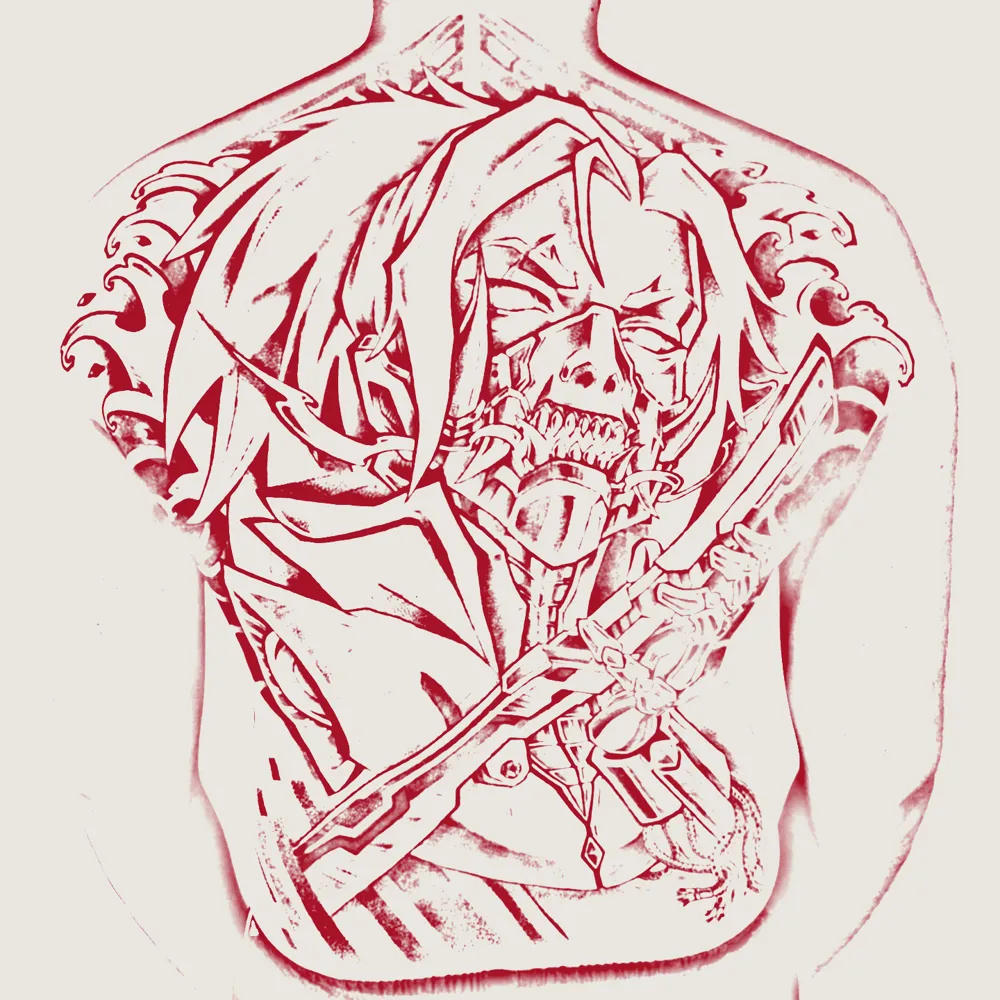
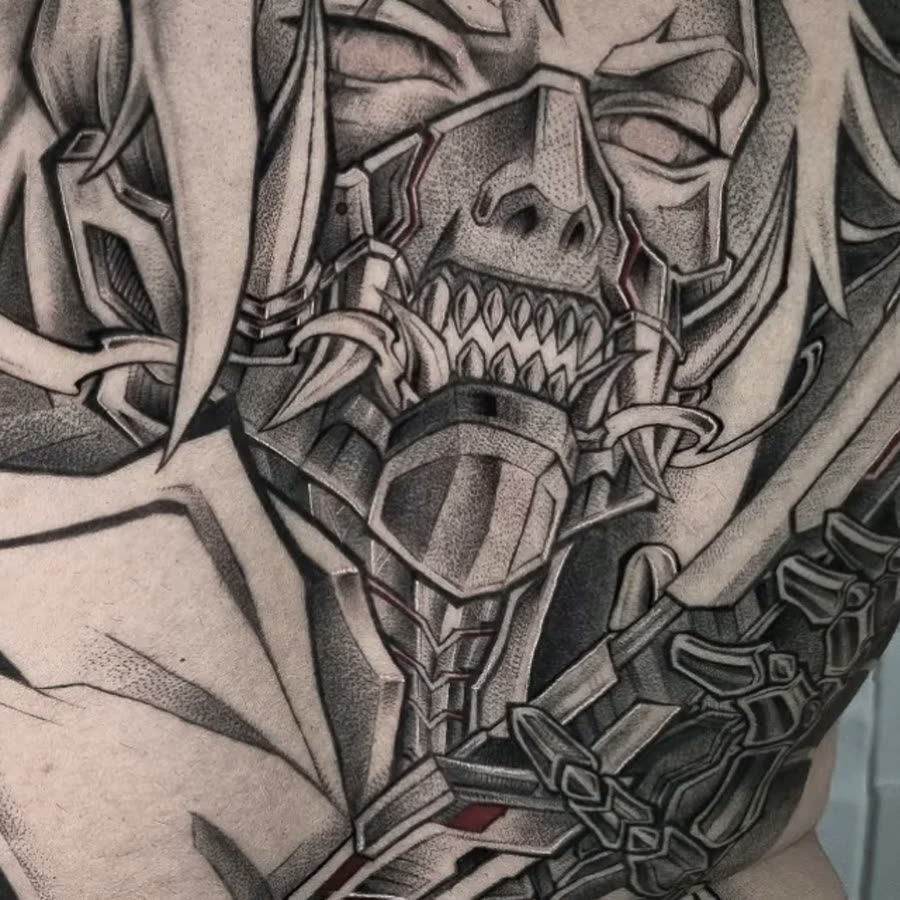
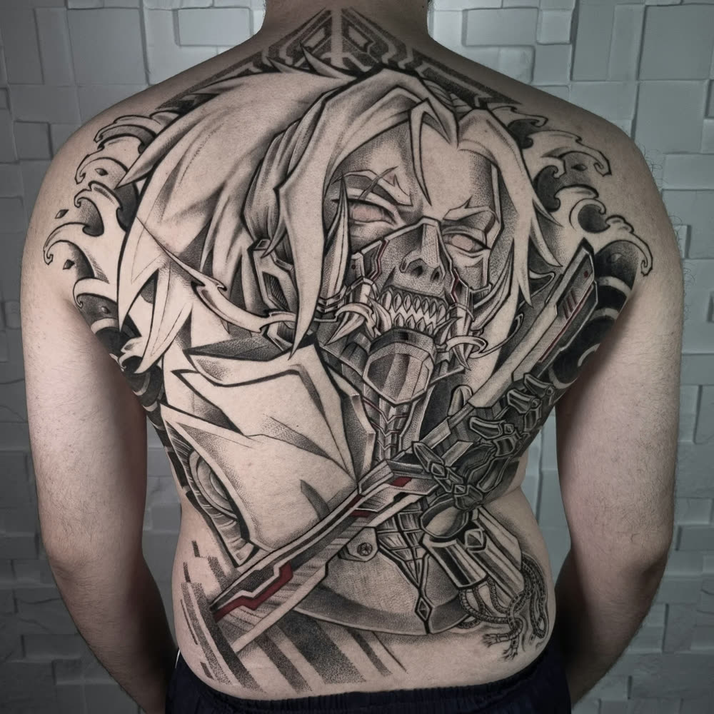
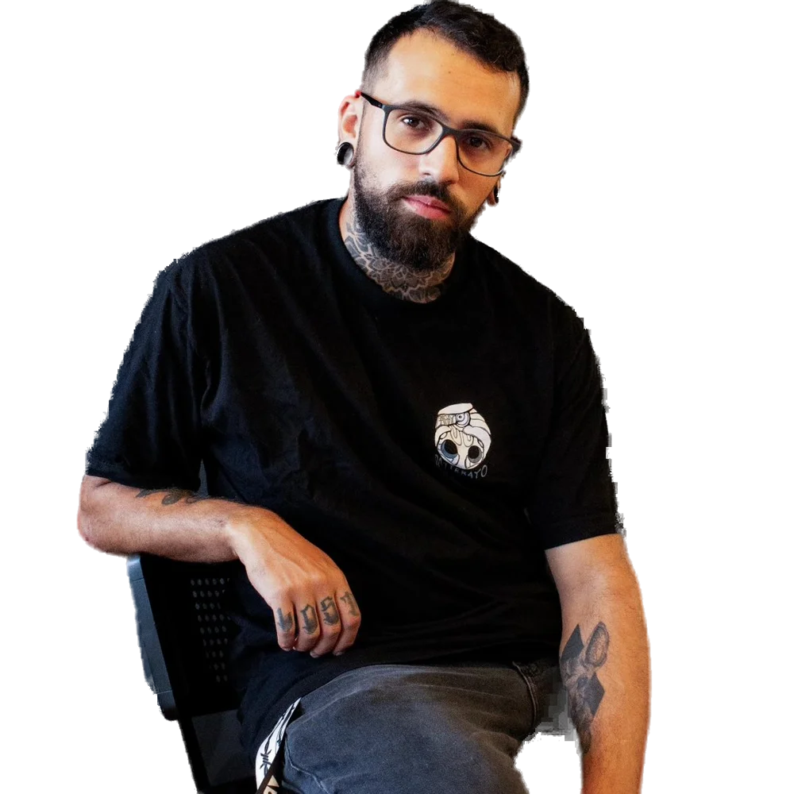
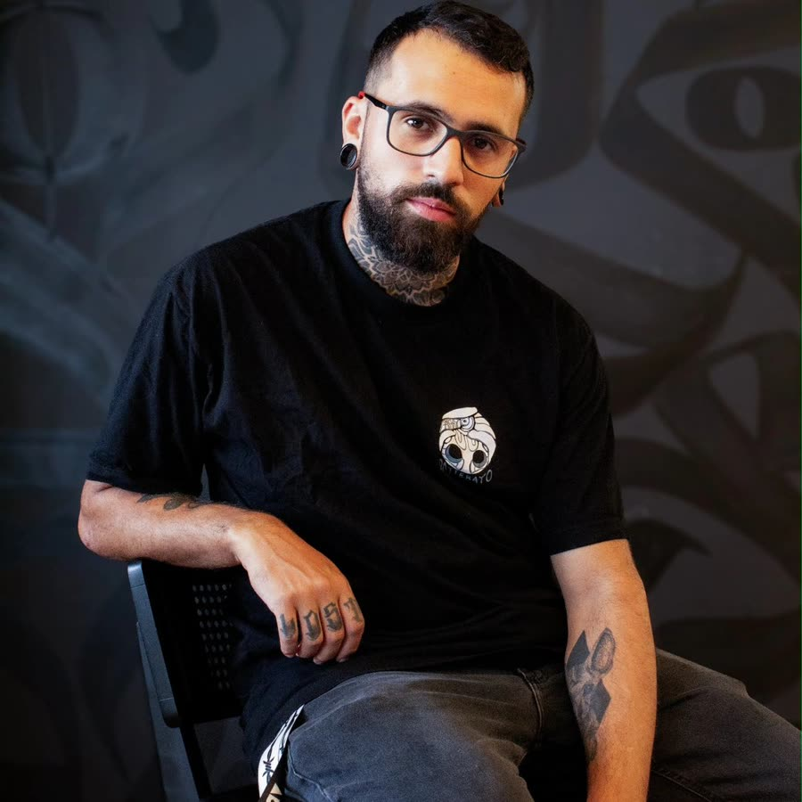
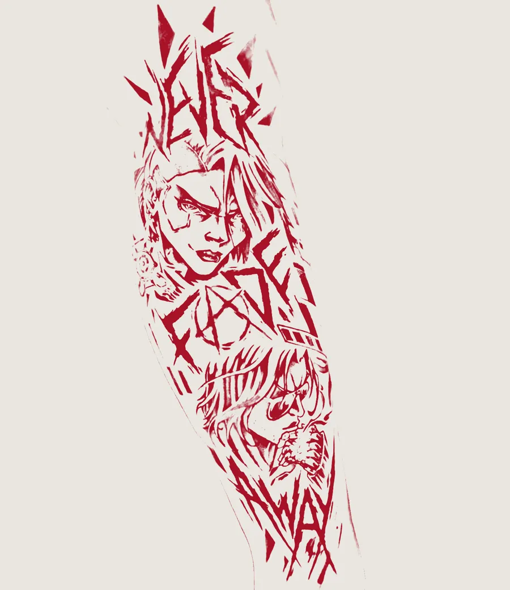
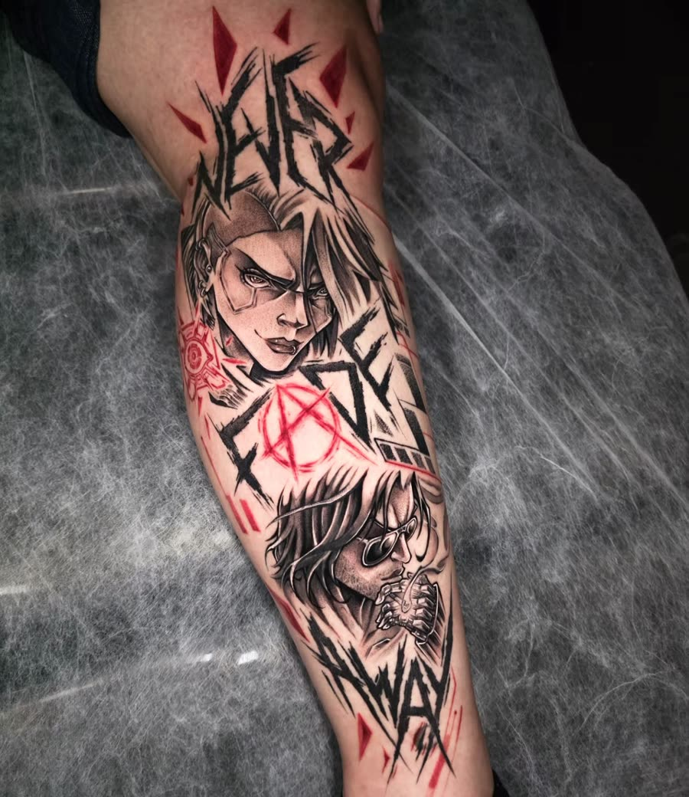
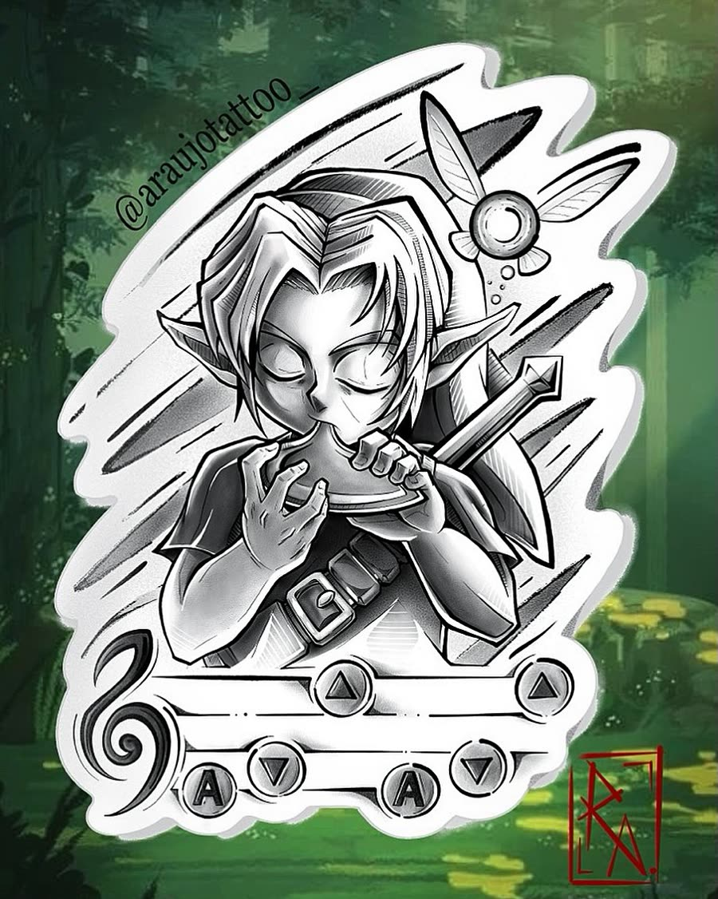

Vol. 1 · Osasco, Jandira e Vila Mariana
Rafael Araújo
Tatuagem de anime, blackwork e cultura geek.

Cap. 1 · A ideia
Você chega com um personagem.

Cap. 2 · O traço
Eu desenho ele para o seu corpo.

Cap. 3 · A tinta
E ele fica. Para sempre.


Cap. 4 · Ficha do personagem
Prazer, Rafael.
Se aquele anime marcou a sua vida, ele merece mais que uma cópia da internet. Eu pego a cena, entendo o que ela significa para você e desenho no meu traço.
- Classe
- Tattoo artist
- Estilo
- Blackwork e geek
- Foco
- Anime, jogo e filme
- Golpe especial
- Preto pontilhado com vermelho
Cap. 5 · Tatuagens
Anime na pele.
Trabalhos reais, feitos por mim. Toque para ver de perto.
Cap. 6 · Do risco à pele
Segure para tatuar.
Toda peça começa como esse risco. Encosta o dedo e segura, que a tinta entra daí.


Pronto. Agora é para sempre.
Imagina o seu personagem aí.
Cap. 7 · Disponíveis
Artes prontas para virar tatuagem.
Desenhadas por mim. Gostou de uma? Toque em "Quero essa" e me chama.
Quero essa

Melodia da floresta
DisponívelTem mais no destaque "Disponíveis" do meu Instagram.
Cap. 8 · Processo
Quatro fases até o chefão final.
- Fase 1
Orçamento
Me manda a ideia, o tamanho e o local do corpo no WhatsApp. Print da cena ajuda muito.
- Fase 2
Arte
Desenho a sua peça e te mostro antes. A agulha só encosta depois que você aprovar.
- Fase 3
Sessão
Agulha e material descartáveis, abertos na sua frente. Fez cansar, a gente pausa.
- Fase 4
Cicatrização
Você sai com os cuidados na mão. Dúvida no meio do caminho, me chama.
Cap. 9 · Onde me achar
- Osasco@adv_tattoo
- JandiraSP
- Vila MarianaSão Paulo, SP
Me chama que eu passo a agenda e o endereço de cada lugar.
Cap. 10 · Dúvidas
Pode perguntar.
Dói muito?
Depende do lugar e de cada pessoa. Costela, coluna e pé costumam incomodar mais. Antebraço e coxa costumam ser mais tranquilos. A gente faz pausa quando você precisar.
Quanto custa?
Depende do tamanho, do local e do detalhe da arte. Me manda a ideia no WhatsApp e eu te passo o valor antes de qualquer coisa.
Vai ficar igual ao que a gente combinou?
Você vê a arte antes e aprova. Se eu precisar mudar um detalhe para funcionar melhor na pele, te falo e a gente decide junto.
Posso levar a minha ideia?
Deve. Print do anime, foto da cena, rabisco no papel, vale tudo. Quanto mais você me contar por que aquele personagem importa, melhor fica a arte.
Como cuido para não estragar?
Nas primeiras semanas: sem coçar, sem tirar a casquinha e longe do sol. Eu te passo o passo a passo no dia da sessão.
É a minha primeira tatuagem. Tudo bem?
Tudo certo. Eu explico cada etapa antes de começar e a gente escolhe um lugar que combine com você.
Cap. 11 · Sua vez
Qual personagem vem com você?
Me manda a ideia no WhatsApp. O tamanho, o local do corpo e uma referência já bastam.